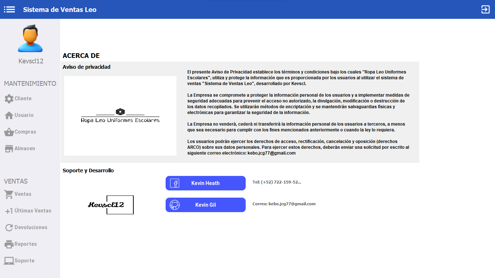
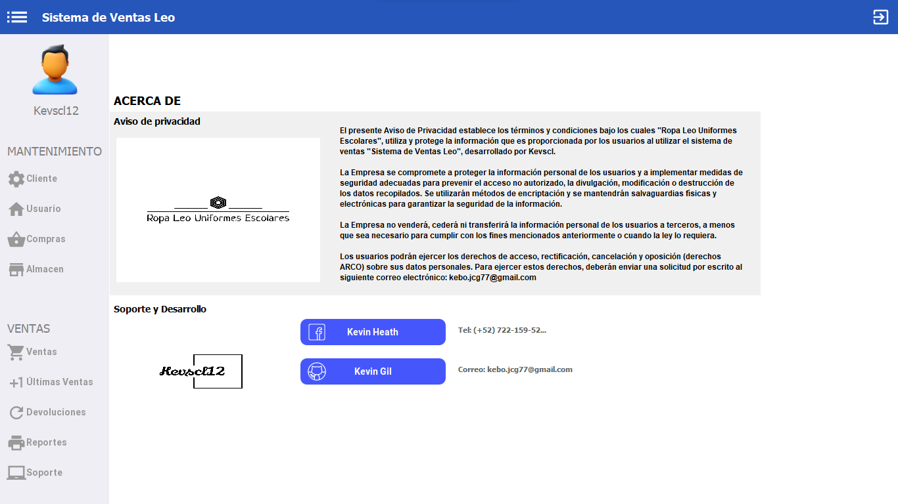

Descripción
Desarrollo de un Sistema Integral de Ventas para el Control de Ventas, Inventario y Compras El objetivo de este proyecto es implementar un Sistema de Ventas que permita la gestión eficiente de los procesos de ventas, inventario y compras en un entorno empresarial. Este sistema se propone brindar una solución completa y organizada que mejore la productividad y la toma de decisiones mediante las siguientes características:Características
Gestión de Usuarios y Restauración: El sistema ofrecerá autenticación segura para los usuarios, permitiendo el acceso al menú principal del sistema. Además, incluirá la capacidad de restaurar cuentas mediante el envío de correos electrónicos con los datos de inicio de sesión en caso de olvido.
Control de Ventas y Reportes para Clientes: Se implementará un módulo de control de ventas que permitirá registrar y rastrear las transacciones de ventas. Además, se habilitará la generación automática de reportes de ventas en formato PDF, que podrán ser enviados a los clientes registrados, brindando transparencia y comunicación efectiva.
Gestión de Inventario: El sistema llevará un seguimiento en tiempo real del inventario disponible. Los productos se registrarán con detalles como descripción, precio, cantidad en stock, entre otros.
Registro y Control de Compras: Se integrará un módulo de compras que permitirá registrar y monitorizar las adquisiciones de materia prima. Los detalles de las compras, descripción, fechas y cantidades, se registrarán para mantener un historial completo y preciso.
Generación de Informes en PDF y Excel: El sistema permitirá generar informes detallados en formatos PDF y Excel para proporcionar análisis y visualizaciones claras. Estos informes incluirán registros de ventas, compras e inventario, lo que facilitará la toma de decisiones informadas.
Informe Contable Simplificado: Se desarrollará un módulo contable básico donde las compras se considerarán gastos y las ventas se registrarán como ingresos. Esto proporcionará una visión general de la salud financiera del negocio y ayudará en la preparación de informes contables sencillos.
 
